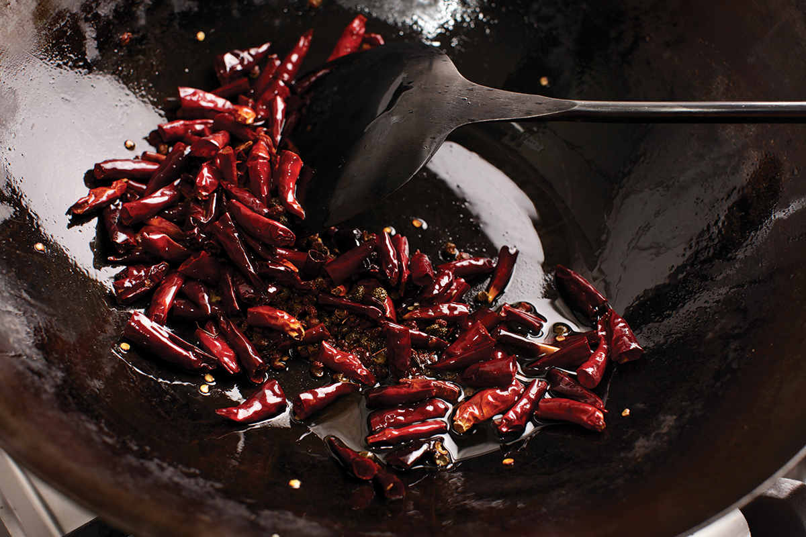
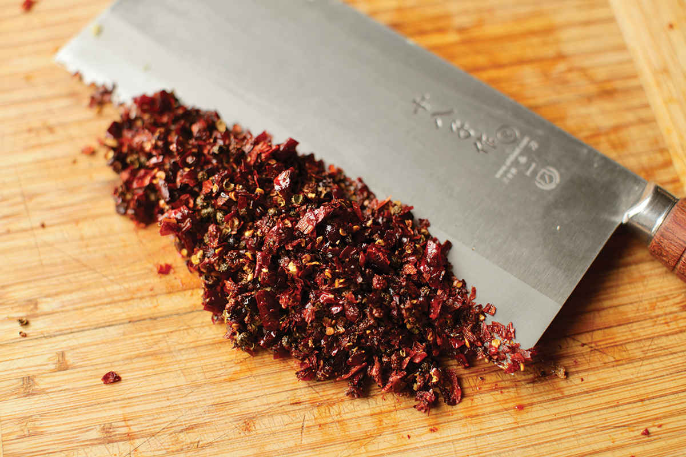
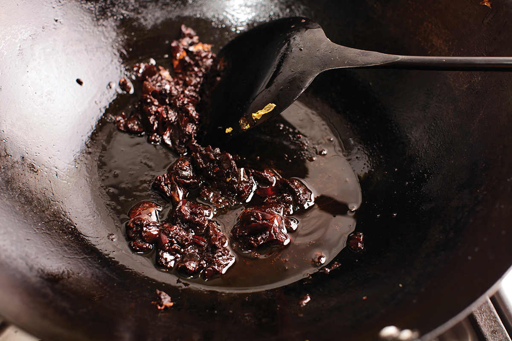
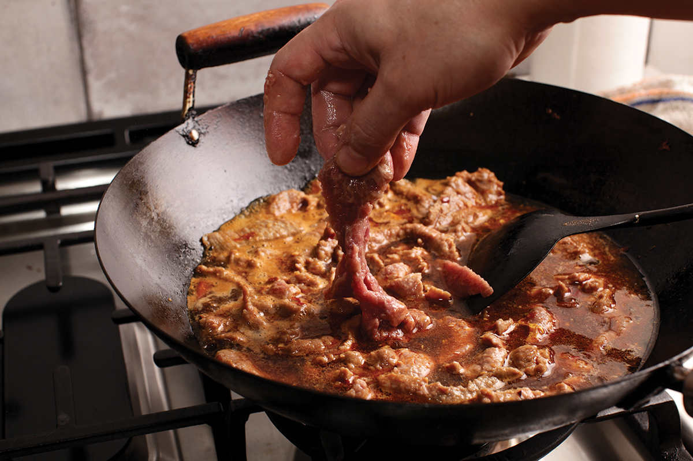
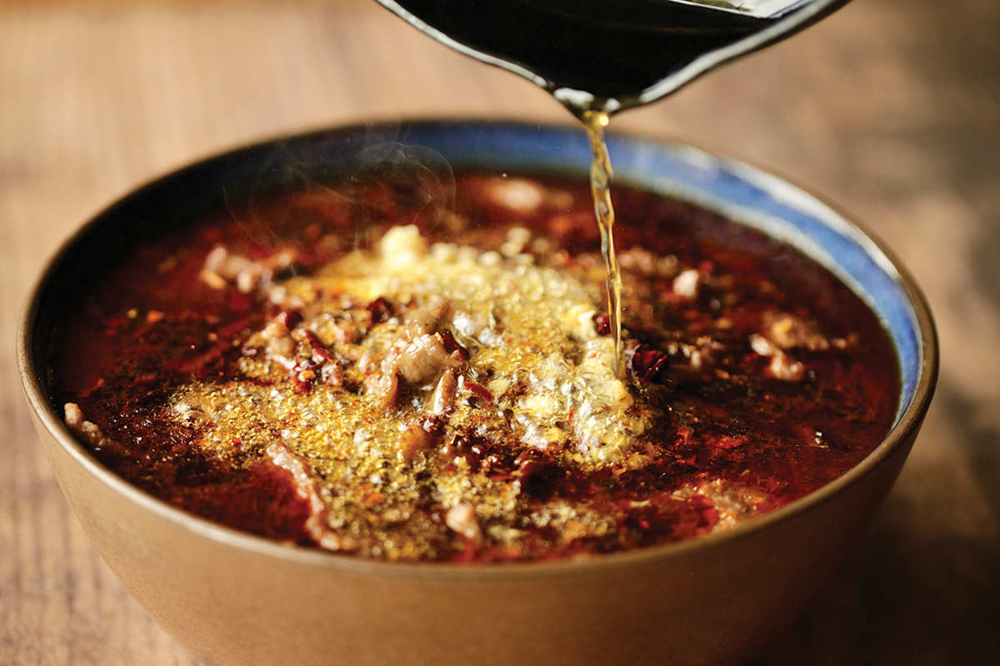
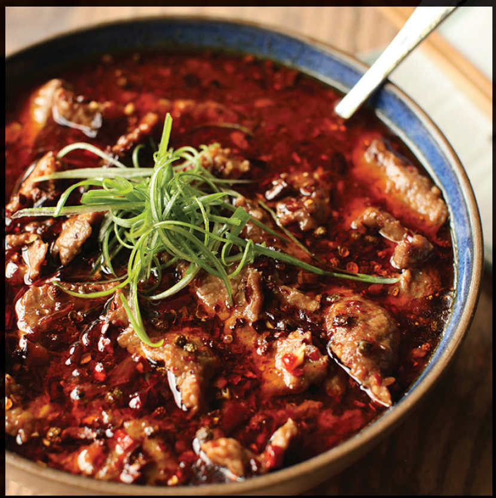

WATER-BOILED BEEF
Never has the name of a dish been so incongruous with the dish itself. While the beef in Sichuan shui zhu niu rou (water-boiled beef) is technically boiled in water, a more fitting name would be “Chile-Coated Beef Tenderized by Sauron Himself in the Eternal Fires of Mt. Doom.” (If someone could translate that, I’d appreciate it.)
Wanna see more chile oil than you’ve ever seen in a single place? Order yourself a bowl of shui zhu niu rou and wait for your volcano to arrive. Tender slices of marinated beef are tucked under a layer of angry red chile oil speckled with garlic, chiles, and Sichuan peppercorns. As you lift the slices out from their bath, they drag up through the oil, which gives them (and probably your shirt) a flavorful coating.
For such a complex-tasting and impressive-looking dish, it’s remarkably easy. All you need to do is marinate beef, coat it in starch, simmer it in a flavored broth with some cabbage, celery, and scallions, pour it into a bowl, and drizzle the whole thing with sizzling-hot oil to bloom some of the flavors. The starch coating on the beef gives it an ultra-tender, almost slippery texture.
The technique I use is based on Fuchsia Dunlop’s recipe from Land of Plenty (now re-titled as The Food of Sichuan), an essential manual for any English-speaking cook who wants to learn more about Sichuan cuisine. I’ve adapted it a bit to my own tastes by changing the cut of beef, adding a baking soda marinating step, and adding garlic to the bowl before pouring over the sizzling hot oil, but the basic technique is intact.
|
Yield Serves 4 |
Active Time 25 minutes Total Time 25 minutes |
This recipe calls for beef tenderloin. You can also use other lean, tender cuts like flank steak, tritip, or eye of round. The key is slicing very thinly against the grain. A sharp knife helps with this, and if you still have trouble, try throwing the beef in the freezer for 15 minutes to firm it up. You can also buy shaved beef intended for shabu or sukiyaki for this dish. If you don’t have Sichuan er jing tiao chiles, you can use other small red chiles, such as árbol, Japones, or chao tian jiao.
INGREDIENTS
For the Beef:
1 pound (450 g) beef tenderloin (see Notes), sliced against the grain as thin as possible
¼ teaspoon (1 g) baking soda
1 tablespoon (15 ml) Shaoxing wine
1 tablespoon (15 ml) light soy sauce
1 teaspoon (5 ml) peanut, rice bran, or other neutral oil
1 tablespoon (9 g) cornstarch
For the Málà Mixture:
3 tablespoons (45 ml) vegetable oil
12 to 20 small dried red chiles, such as Sichuan er jing tiao (see Notes), stems snipped off and discarded, seeds mostly shaken out and discarded
1 tablespoon (5 g) Sichuan peppercorns
To Cook:
1 celery stalk, cut on a sharp bias into 1½-inch segments
2 scallions, white and pale green parts cut into 1-inch segments, greens chopped for garnish
8 ounces (225 g) Napa cabbage, cut into bite-sized pieces
3 tablespoons (45 g) Sichuan broad bean chile paste (doubanjiang)
2 teaspoons (5 g) minced garlic (about 2 medium cloves)
2 teaspoons (5 g) minced fresh ginger (about ½-inch segment)
1 tablespoon (10 to 12 g) Sichuan or Korean chile flakes
2 cups (480 ml) homemade or store-bought low-sodium chicken stock or water
1 tablespoon (15 ml) dark soy sauce
To Serve:
1 tablespoon (8 g) minced garlic (about 3 medium cloves)
¼ cup (60 ml) caiziyou (roasted rapeseed oil; see here) or peanut, rice bran, or other neutral oil
DIRECTIONS
1 For the Beef: Place the beef in a medium bowl, cover with cold water, and vigorously agitate it. Drain through a fine-mesh strainer set in the sink and press on the beef with your hands to remove excess water. Return the beef to the bowl, add the baking soda, and vigorously massage the baking soda into the meat, lifting the meat, throwing it down, and squeezing it for 30 to 60 seconds. Add the wine, soy sauce, oil, and cornstarch and roughly work the marinade into the meat for at least 30 seconds. Set aside.
2 For the Málà Mixture: Combine the oil and chiles in a wok. Cook over medium heat, stirring and flipping the chiles constantly until they start to darken in color, about 1 minute. Add the Sichuan peppercorns and continue cooking until very fragrant but not burnt, 30 to 60 seconds longer. Transfer the chiles and peppercorns to a cutting board, leaving the oil in the wok. Chop the chiles and Sichuan peppercorns until they are about the same size as standard red pepper flakes (the kind you put on your pizza). Set aside.
3 To Cook: Return the wok to high heat until smoking. Add the celery, white and pale green parts of the scallions, and Napa cabbage and stir-fry until tender and wilted, about 2 minutes. Transfer to the bottom of a large serving bowl, leaving the oil in the wok (if the wok is dry, add another tablespoon of oil to the bottom at this point).
4 Return the wok to high heat. Add the chile bean paste and cook, stirring, until it sizzles and the oil starts to turn red, about 30 seconds. Add the garlic, ginger, and chile flakes and cook until aromatic, about 15 seconds. Add the stock and the soy sauce and bring the mixture to a simmer.
5 Gently lower the beef into the wok one piece at a time so that it doesn’t stick. Increase the heat to high and cook, swirling constantly, until the beef is just barely cooked through and the liquid is simmering, about 1 minute. Pour the beef and the broth over the celery and cabbage in the bowl. Wipe out the wok.
6 To Serve: Sprinkle the chopped chile and Sichuan peppercorn mixture all over the top of the beef. Sprinkle the minced garlic over the top. Heat the oil in the wok until it is smoking hot, then pour it all over the top of the serving bowl, causing the chiles, Sichuan peppercorn, and garlic to sizzle and release their aroma. Top with the scallion greens and serve immediately.





